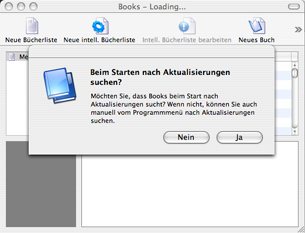

Nutzer einer früheren Version
Wenn Sie die neue Version von Books zum ersten Mal starten, bemerken Sie einige Unterschiede zu Books 2 oder auch zu Books 1. Ganz auffälig ist das neue Hauptfenster. Aber das ist nicht der einzige Unterschied. Viele neue Funktionen sind hinzugekommen, mit denen Ihnen die Arbeit mit Books erleichtert werden soll. Diese Hilfeseiten sollen Ihnen dabei eine Unterstützung sein, die neue Books-Version zu verstehen.
Sobald Sie die neue Books-Version starten, werden Sie gefragt, ob Books automatisch nach Aktualisierungen im Internet suchen soll. Egal wie Sie sich entscheiden, Books wird weiterhin funktionieren. Sie können diese Einstellung aber auch später wieder korrigieren bzw. auch manuell vom Books-Menü aus nach Aktualisierungen suchen.

Haben Sie bereits Books 2 genutzt, ist es ganz einfach, Ihre Daten für Books 3 aufzubereiten. Starten Sie dazu die Anwendung und wählen Sie in dem Menüpunkt «Bearbeiten» den Eintrag «Importieren» und dort den Eintrag «Books 2.0». Sie erhalten ein Fenster, durch das Sie ihre .books-Datei auswählen können. Nachdem die Erweiterung die Datei bearbeitet hat, erhalten Sie eine Liste aller Bücher, aus denen Sie jene Bücher auswählen können, die Sie mit Books 3 verwenden wollen. Wollen Sie alle Ihre Bücher importieren, dann klicken Sie einfach auf den Knopf «Importieren». Das Fenster verschwindet und Books gibt die Meldung aus, daß Ihre Dateien importiert werden. Sobald der Vorgang abgeschlossen ist, erhalten Sie eine neue Bücherliste mit dem Namen «Daten von Books 2.0», die Sie auch nach Ihren Wünschen umbenennen können.